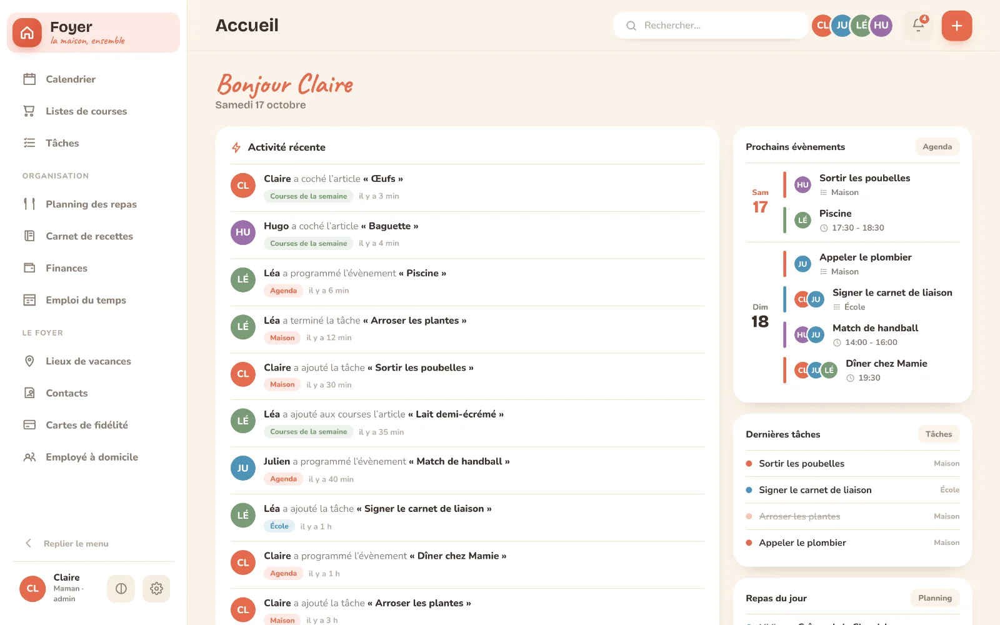
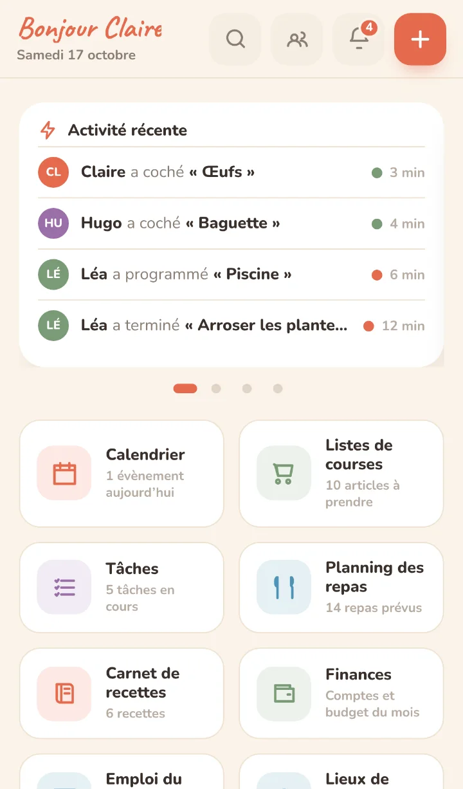
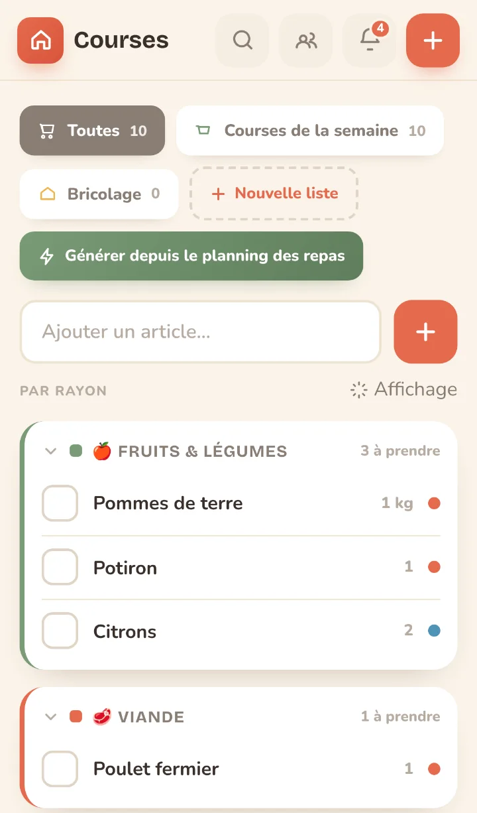
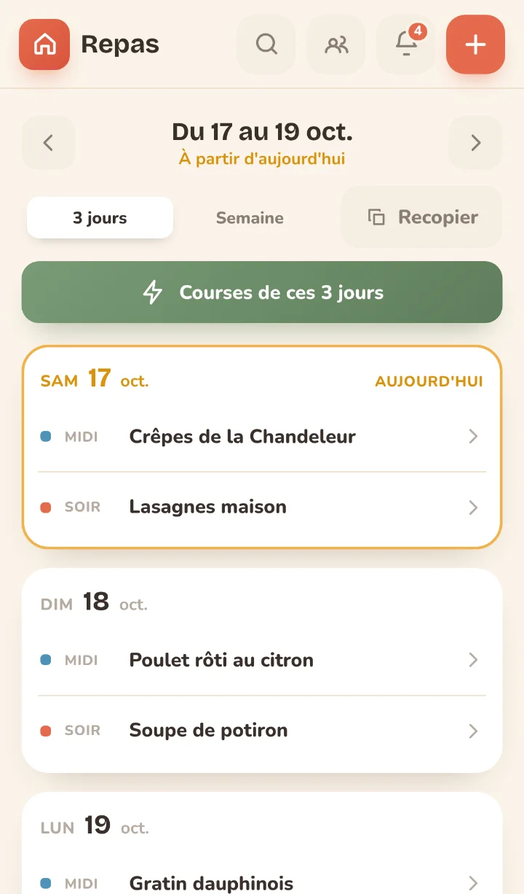
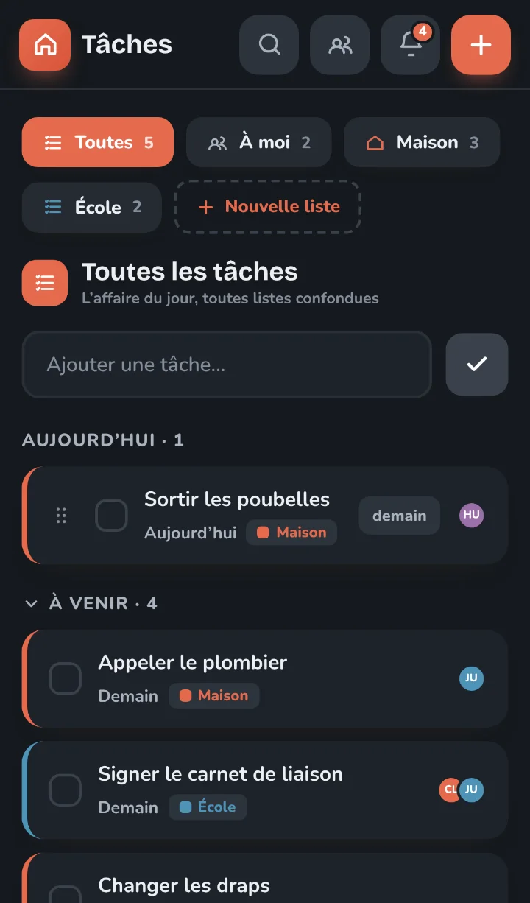

Vos données restent chez vous
Pas de cloud, pas de pistage, pas d'abonnement. Un seul conteneur et une base SQLite dans un volume que vous sauvegardez comme vous voulez.
Application familiale libre et auto-hébergée
la maison, ensemble
Agenda partagé, courses, tâches, repas, recettes, finances et emplois du temps, dans une seule application chaleureuse que vous installez sur votre serveur. Sans compte chez personne, sans publicité, sans abonnement.


Pourquoi Foyer
Un agenda partagé chez un géant de la publicité, une liste de courses griffonnée, des rappels dans un groupe de discussion. Foyer remet tout au même endroit, sur une machine qui vous appartient.
Pas de cloud, pas de pistage, pas d'abonnement. Un seul conteneur et une base SQLite dans un volume que vous sauvegardez comme vous voulez.
Euro, semaine qui commence le lundi, jours fériés et vacances scolaires de votre académie, CESU, ÉcoleDirecte. Tout est déjà à la bonne place.
Le menu de la semaine remplit la liste de courses, une échéance de contrat devient une tâche puis un rappel. On saisit une fois, ça circule.
L'application s'ouvre hors ligne, montre le foyer tel qu'il était, accepte vos coches et les envoie au retour du réseau.
Deux téléphones cochent la même liste en même temps sans que l'un écrase l'autre. Chaque membre a sa couleur, ses accès, son profil.
Thème clair ou sombre, palette terracotta et sauge, du grand écran au téléphone. Installable comme une application, avec rappels sur l'écran verrouillé.
Aperçu
L'accueil, mur de la famille : ce qui a changé récemment, les prochains rendez-vous, les tâches et les repas du jour.
Sur le téléphone
Foyer s'installe sur l'écran d'accueil comme une vraie application. Le panneau de chaque élément monte du bas, à portée du pouce.



Fonctionnalités
Activez seulement ce qui vous sert : un administrateur peut couper un module, sans jamais perdre ses données.
Récurrences, une seule occurrence modifiable, fériés, vacances scolaires, anniversaires. Flux ICS en lecture seule.
Multi-listes, rayons dans l'ordre de votre magasin, génération depuis les repas, coche à plusieurs et hors ligne.
Affectation, récurrence, sous-tâches, modèles, vue « À moi » et rappels sur le téléphone.
Déjeuner et dîner sur 3 ou 7 jours, plusieurs plats, couverts, glisser-déposer, recopie d'une semaine.
Carnet avec photos, import depuis Marmiton, 750g ou un blog, recherche « courgette 20min végétarien ».
Six espaces : Aperçu à enveloppes et « À surveiller », opérations classées (import CSV, OFX, CAMT, xlsx, et règles), comptes et crédits avec patrimoine net, contrats et compteurs, tendances sur douze mois.
La semaine type du foyer, une semaine sur deux, périodes scolaires. Compte les couverts, publie à l'agenda.
Devoirs, notes et emploi du temps des enfants depuis ÉcoleDirecte. Désactivé par défaut, identifiants chiffrés.
Allergènes et aliments refusés par membre ; les recettes disent à qui elles ne conviennent pas.
Les heures de ménage déclarées au CESU, avec les chiffres exacts à recopier en fin de mois. Réservé aux adultes.
Les gestes qui reviennent (cartouche de la carafe, détecteurs, chaudière) : « Fait aujourd'hui » en un tap, le stock du consommable part aux courses, gestes de saison. Ce sont des tâches.
Une fiche par appareil, rangée par pièce : facture, plaque signalétique, numéro de série, et la garantie calculée au jour près. Rappel avant la fin de garantie, export pour l'assurance.
Scannées une fois par la caméra, réaffichées en grand à la caisse, partagées par toute la famille.
L'inventaire de la maison de vacances, et le carnet des contacts utiles : urgences, santé, école.
On saisit une fois, ça circule
Le menu de la semaine remplit la liste de courses, quantités mises à l'échelle des couverts, avec un rapport avant d'écrire.
Une échéance de résiliation devient une tâche, puis une notification sur le téléphone le moment venu.
Qui est à la maison ce soir ? L'emploi du temps le sait, et le planning des repas compte les couverts tout seul.
Les interrogations arrivent à l'agenda, les devoirs dans une liste « Devoirs de… », et le rappel du soir suit.
Vie privée
Foyer tourne sur votre serveur, votre NAS ou un conteneur Proxmox. Aucune donnée ne part chez un tiers : même les polices sont servies par l'application.
Installer
Au premier démarrage, un assistant crée votre foyer, votre compte administrateur et les membres de la famille.
mkdir foyer && cd foyer
curl -fsSLO https://raw.githubusercontent.com/PrudhommeWTF/Foyer-App/main/docker-compose.yml
echo "FOYER_JWT_SECRET=$(openssl rand -hex 32)" >> .env
docker compose pull
docker compose up -dhttp://localhost:8099 et suivez l'assistant.docker run -d --name foyer -p 127.0.0.1:8099:8099 -v foyer-data:/data \
-e FOYER_JWT_SECRET="$(openssl rand -hex 32)" \
ghcr.io/prudhommewtf/foyer-app:latestgit clone https://github.com/PrudhommeWTF/Foyer-App.git
cd Foyer-App
bash deploy/lxc/proxmox-create.sh # depuis l'hôte Proxmox, en rootMise à jour en un bouton depuis l'application, ou bash deploy/lxc/update.sh.
Variables d'environnement, reverse-proxy, sauvegarde et restauration : tout est dans le README du dépôt.